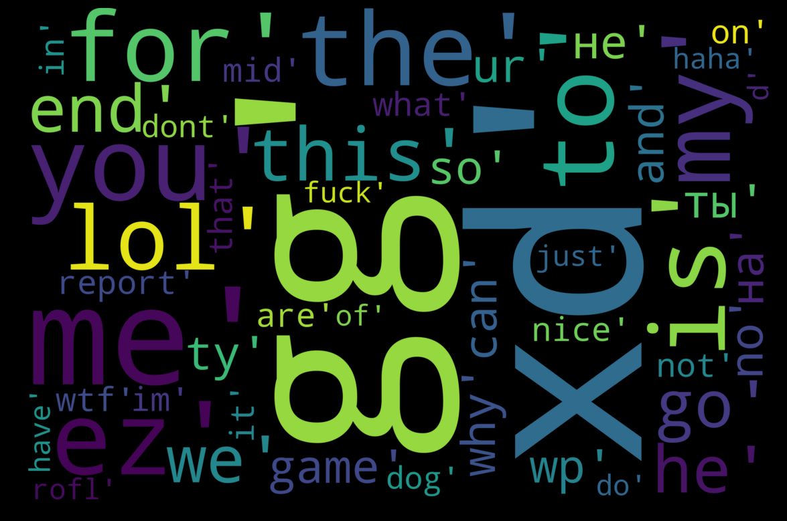
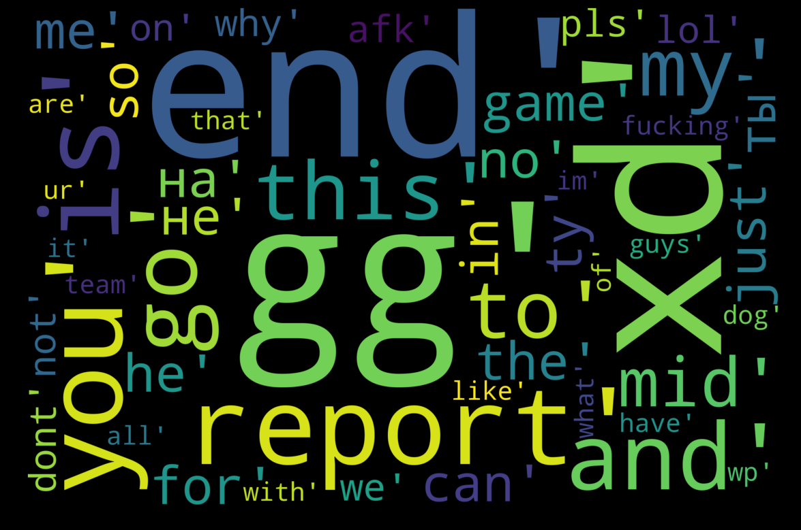

Preface
Dota 2 is a multiplayer online battle arena video game (MOBA). MOBA is an extremely popular genre which
spans across numerous widely played titles. It's also a very competitive format. This makes it
attractive from a financial perspective, as tournament prize pools are large and numerous betting sites
offer opportunities for quick monetary gains. As is the case for any profitable endeavour, helping the
aspirants to achieve their goals can also be very lucrative. Thus we present our analysis of the most
important factors of winning a game of Dota 2. This information is useful for both the players and
anyone interested to predict match results.
Communication
When you play dota, you should be communicating with your team so you can follow up their actions and vice versa. As you know that the community can be really toxic at times, but you will see in here how what you are saying actually can be used as an indicator on your winning. We know that dota can be very frustrating and you want to flame your team and think they are pulling you down.. Lot of people think that way. It is very important to not let yourself get frustrated to a point where you are losing focus on the game and focusing more on writing and 'flaming' your teammates. Below, you can see the most common used words in the chat for the people who wins and loses.
Won games
Following image is a word cloud graph drawn from the most common words said by the winning teams. You will see that the general theme is positive, don't forget that people use curses when they are not negative as well! That is how the gaming community is...

Lost games
Word cloud graph of the lost games draws a very different picture. Notably prevalent is the word 'report' and 'end'. This obviously is a very clear sign of toxicity and flaming your teammates. So if you want to win more games, focus on your own game and try staying positive! Might be difficult at first but it will reward you with more wins!! and This refers to the reporting functionality which is present in the game. You can report players to the game developer company in case they have behaved in either toxic manner, not been playing or have cheated. Often players in the losing teams want to report their own team members for not performing up to the reporting player's standards.

Feature importance
The following graph displays the most significant factors affecting the probability to win a high level
game of Dota 2.
Pings Per Minute
Since you can warn or suggest something to your teammates without losing control due to writing, it is a very efficient form of communication. Might seem trivial, but it is as important as warding and stacking!
Wards Per Minute
Wards grant you vision of the map for a fixed duration as well as taking the enemy vision down. This will help you to avoid unwanted combats, ganks and be better at ganks, team combats and help you farm more safely (thus efficiently).
Camp Stacks Per Minute
Stacking camps is a really easy way to double the gain from a neutral camp, that you can keep in mind while rotating in the map. The analysis shows it about equally important as warding/dewarding. Meaning that, supporting is not about wards only, it is essentially enabling your cores.
Healing Per Minute
Healing items and heroes that has healing skills can have big impact in the fights. As we see in the analysis, it is very close to denying creeps in the importance order. Get that meka up for your team!
Denies Per Minute
By denying creeps in the lane, you essentially take the enemy's gold away along with %60 of the experience! On top of all that, you will gain 20% of the gold for yourself! So try to deny creeps, regardless of the role. That little bit of gold can help you out when you are playing hard support. Especially when we see that denying is about equally importance as overall lane efficiency!
Lane Efficiency
As we see from the distribution of the importance, being efficient in lane is very important! You should practice on last hitting, lane control, aggro control, denies and farming patterns while still not missing creeps from the lane. It is almost as important as hero damage per minute, which should tell you that it is not always the best to help out the team for every single fight you see!
Regeneration Items Use Per Minute
This is one of the things that looks small but has a huge impact, about the same as lane efficiency and very close to damaging enemy heroes. You should avoid walking back to base as you will lose so much xp and gold doing that. Buy salves, tangoes, clarities, mangos to be able to contest your lane and keep farming! If you are low on mana, don't run to base every single time. Buy clarities, it will help you more than you think!
Hero Damage Per Minute
Damaging enemy heroes can help you create space, prepare for a kill or a push. If you are a support, don't sit behind your cores and keep harrassing the enemy as your goal should be keeping him out of the lane. Make him burn through his regen items. If you are a core, harrassing the enemy hero can help you dominate the lane. They will be less prone to get last hits and if they try you might even have a kill potential!
XP Per Minute
As you might have guessed, experience per minute is the 4th most important factor towards winning. So focus on trying to salvage as much experience as you can from the map.
Kills Per Minute
Kills per minute is obviously very important but the it might come to your surprise that deaths and kills are almost equally important. So do not try to die to get a kill whenever you see the opportunity. It is as important for you to not to die, as it is to get kills!
Deaths Per Minute
Not dying is the second most important aspect to win more games, as the data shows. If you are playing support, try to position yourself in combats so that you can throw your skills and stay alive as long as possible. Thus you will be enabling your cores and providing as much as possible, which will return as more wins! If you are a core player, be mindful of the kills you are chasing and heroes you are initiating. Don't die to get just any kill, be mindful and selective about it!
Gold Per Minute
It is expected to see this variable on top of the list. Practice on using the map to the fullest. Don't let lanes be empty and not utilized. You should be pushing the lanes, which will give you gold and also make your jungle safer which in return gives enables even more farm!! Watch how pro players use the map to farm and get the most out of it!
Match prediction
We built a prediction model for estimating the results of matches based on team compositions.
Radiant is predicted to win..
The Dire is predicted to win.